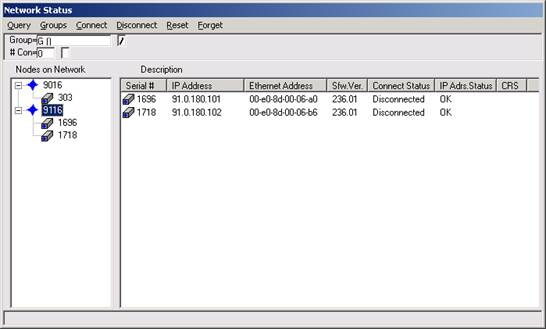
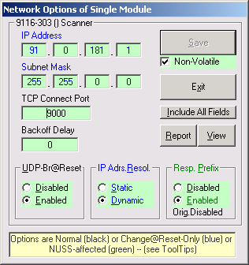

How To – Configure Network Parameters on a Scanner
This How To provides the steps required to configure network parameters on a scanner.
To Configure Network Parameters on a Scanner
Network parameter configuration may be required for a new scanner, or a scanner that has returned from off-site calibration or repair.
Scanner Address Check
NUSS is an administrative tool that can modify critical settings on the scanner. If the configuration procedure is not followed correctly, the scanner firmware may be corrupted and the scanner must be returned to the manufacturer for repair. Consult the vendor documentation for further information.
- From a computer on the real-time network, connect to the scanner via Ethernet and start the NetScanner Unified Startup Software (NUSS).
- Turn on the scanner on the real-time network.
- Note the scanner serial number.
- Locate the scanner serial number in the directory and verify the IP address. If the address is correct, the scanner is ready for operation. If the address is incorrect, proceed with the next step.
- If the address is in the same sub-net as the computer, and the first three IP address numbers are correct, go to step 3 of Scanner Network Configuration section of this procedure, and skip steps 1 to 10 of Restore System Configuration section. If the address is not in the same sub-net, record the scanner IP address and proceed to step 1 of Configure Computer to Communicate with Scanner.
Configure Computer to Communicate with Scanner
- From the desktop, right click the My Network Places icon and select Properties.
- Double-click the Local Area Connection icon.
- Select Properties.
- Select Internet Protocol (TCP/IP).
- Select Properties.
- Change the IP address to the same first 3 numbers from step 5 in Scanner Address Check. The last number can be from 1 to 254, but cannot be the same as any other device on the network.
- Select OK on the Internet Protocol (TCP/IP) Properties window.
- Select OK on the Local Area Connection Properties window.
- Select Close on the Local Area Connection Status window.
- Select File and Close on the Network and Dial-Up Connections window.
- Select File and Exit in the NUSS window.
Scanner Network Configuration
- Start NUSS.
- Open the scanner directory in the NUSS Network Status window.
- Locate the scanner serial number.

- Right click on the scanner serial number and select Connect. The Connect Status field in the Network Status window displays "Connected".
- Right click on the scanner serial number and move the mouse pointer to Configure. A new window opens.
- Select Network Options.
- In the Network Options window, enter subnet mask in the Subnet Mask field, such as 255.255.0.0, which is dependent on the Real-Time network configured on the RTE System.

- For the 9216 pressure scanners, the IP address is provided by the DHCP Server.
For pressure scanner models 9116 or older, the IP address is provided by the RARP Server.
- Ensure the following status in the Network Options window:
- the UDP-Br@Reset Option is Enabled
- the IP Adrs. Resol. Option is Dynamic
- the Resp.Prefix Option is Enabled
- the Non-Volatile Option is checked
- Select Save.
- Select Exit.
- Right-click on the scanner icon that is already selected in the NUSS Network Status window and select Disconnect. The Connect Status field in the window displays "Disconnected".
- Turn off the scanner.
- Turn on the scanner.
Restore System Configuration
- From the desktop, right click on the My Network Places icon and select Properties.
- Double click the Local Area Connection icon.
- Select Properties.
- Select Internet Protocol (TCP/IP).
- Select Properties.
- Change the IP address and the subnet mask back to the original values.
- Select OK.
- Select OK on the Local Area Connection Properties window.
- Select Close on the Local Area Connection Status window.
- Select File and Close on the Network and Dial-Up Connections window.
- Select File and Exit on the NUSS window.
- Start NUSS.
- Open the scanner directory in the NUSS Network Status window.
- Locate the scanner serial number and verify that the scanner has an updated IP address.
Pneumatic Pressure Measurement System Channel Configuration
Pneumatic Pressure Measurement System channels are defined in the Pressure Brick Subsystem (PBS) and are configured with the Subsystem Editor and Channel Editor.